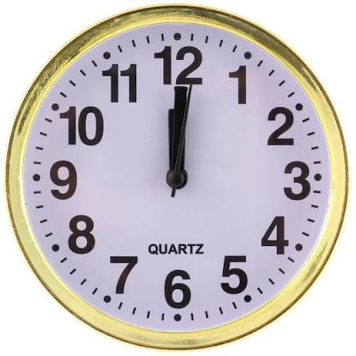

Лабораторна робота №4 — Вертикальні рухомі рядки та зображення
1. Коливання
Динамічний показ годинника

2. Знизу догори
Стрічка ілюстрацій
3. Згори донизу (зупинка)
Фіксація кадру
4. Швидкий
Швидкий потік даних
5. Повільний
Плавний рух донизу